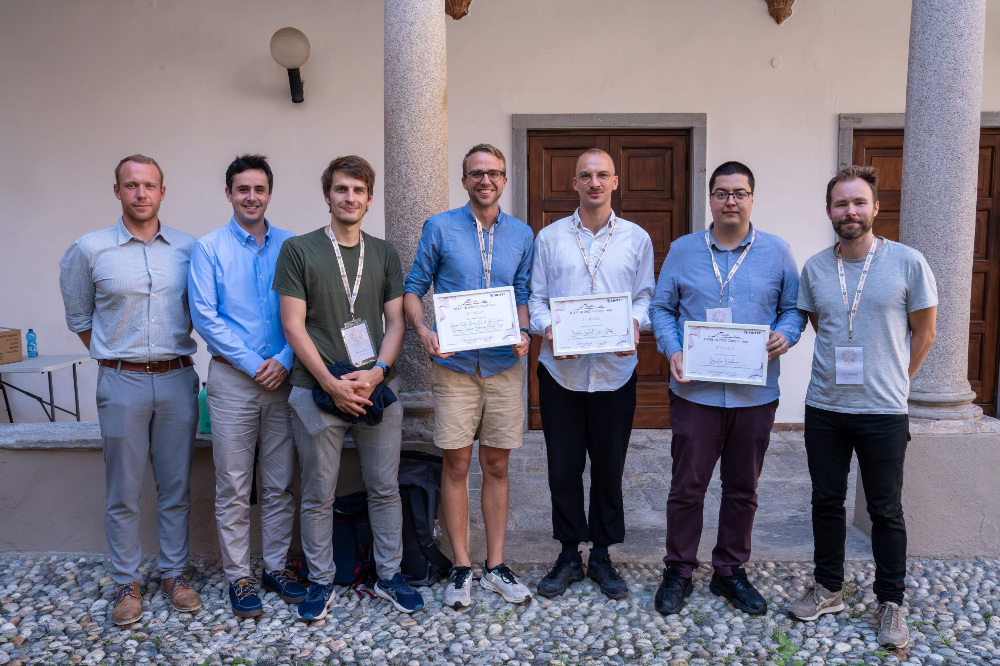

DISPLIB 2025 Competition
The DISPLIB 2025 competition ran from October 2024 to May 2025 and challenged participants to advance the state-of-the-art in real-time train dispatching. Two sets of problem instances were released in two phases (October 2024 and February 2025). The competition deadline has now passed, the competition is over, and results are available below. The winners were announced at ODS Conference, 4 September 2025.
This page documents the competition — please use the main DISPLIB web page instead for accessing the problem instances.
Phase 2 results
We had 15 great teams participating in the competition, of which 11 endured to the end of Phase 2 and submitted a report describing their algorithms. All the reports were well written and the organizing committee is very impressed with the great efforts and grateful for all the contributions. Out of these 11 candidates, the scientific committee selected three finalist teams who were outstanding both in solution quality and in describing interesting and novel ideas used in the computations.
The winner teams were:
-
CSLS
(Carolin Scholl, Luka Stärk)
Awarded 1st place for developing a novel, custom tree-search algorithm that performed extremely well independently of the type of instance.
-
openbus
(Florian Fuchs, Thomas Dubach, Jan Lordieck, Francesco Corman, Bernardo Martin-Iradi)
Awarded 2nd place for effectively combining two high-performing solutions approaches to achieve high-quality solutions in diverse instance types.
-
v777v
(Venislav Varbanov)
Awarded 3rd place for complementing a state-of-the-art row-generation MILP framework with innovative, clever modelling and heuristic ideas.

The three finalists were all comparable in terms of solution quality, and the 1st, 2nd, and 3rd place were awarded by the scientific committee based on a combination of solution quality, and the quality and novelty of the report submitted by each team describing their algorithms. The detailed ranking of solution quality is as follows:
| team | line1 critical | line1 full | line2 close | line2 headway | line3 | line4 small | line4 large | line5 | line6 | line7 small | line7 large | line8 small | line8 large | SUM |
|---|---|---|---|---|---|---|---|---|---|---|---|---|---|---|
|
openbus
Florian Fuchs, Thomas Dubach, Jan Lordieck, Francesco Corman, Bernardo Martin-Iradi |
51 | 65 | 50 | 71 | 75 | 146 | 224 | 51 | 56 | 62 | 43 | 5 | 10 | 909 |
|
CSLS
Carolin Scholl, Luka Stärk |
51 | 57 | 50 | 61 | 75 | 120 | 192 | 42 | 28 | 44 | 50 | 55 | 55 | 880 |
|
v777v
Venislav Varbanov |
51 | 65 | 50 | 76 | 23 | 220 | 0 | 51 | 56 | 66 | 70 | 75 | 75 | 878 |
|
Team L
László Kálmán Trautsch |
51 | 65 | 50 | 76 | 23 | 154 | 55 | 51 | 56 | 14 | 5 | 30 | 630 | |
| The TRAINees
Lina Breuer, Elias Kaiser |
23 | 3 | 40 | 68 | 49 | 64 | 124 | 4 | 6 | 10 | 14 | 26 | 34 | 465 |
| TCS Research Railways team
Aakash Swami, Gajendra Malviya |
1 | 25 | 38 | 96 | 2 | 1 | 30 | 35 | 34 | 34 | 296 | |||
| WUB (Wien, Udine, Bologna)
Vera Hemmelmayr, Hai Yen Luu, Roberto Maria Rosati, Sara Ceschia, Andrea Schaerf, Alex Fabián Barrales Araneda, Valentina Cacchiani |
51 | 34 | 4 | 10 | 12 | 25 | 33 | 16 | 11 | 20 | 24 | 14 | 15 | 269 |
| STR
BiSheng He, Jie Cao, Xinyi Guo, Yonglong Huang, Qun Zhuo, Xinyu Li |
1 | 5 | 14 | 33 | 60 | 17 | 16 | 6 | 7 | 11 | 22 | 192 | ||
| Brannon King
Brannon King |
19 | 19 | 14 | 31 | 23 | 19 | 26 | 151 | ||||||
| AWSOME
Ivo Stammis |
6 | 1 | 20 | 17 | 3 | 47 | ||||||||
| Delayed Train
Péter Dobrovoczki, Péter Györgyi, Markó Horváth, Tamás Kis |
4 | 3 | 3 | 10 | ||||||||||
| The A-Team
Andres Espinoza, Alaina Gordon, Aleksandr Kazachkov, Yuyang Sun |
3 | 3 | 6 | |||||||||||
| Railmen
Chongshuang Chen, Feng Xue, Hua Meng, Xinyue Qin |
1 | 2 | 1 | 4 | ||||||||||
| RailwayRam
Hariharan Subramanian, Sachin Jayaswal |
0 | |||||||||||||
| MILP
Giovanni Ciaramella |
0 |
Phase 1 results
Eight teams submitted solutions within the Phase 1 deadline. The organizers are very grateful for the high quality of these submissions. Please note that these scores were computed completely independently of the Phase 2 scores.
| team | line1_critical | line1_full | line2_close | line2_headway | line3 | SUM |
|---|---|---|---|---|---|---|
|
openbus
Florian Fuchs, Thomas Dubach, Jan Lordieck, Bernardo Martin-Iradi |
76 | 95 | 80 | 77 | 42 | 370 |
|
CSLS
Carolin Scholl, Luka Stärk |
76 | 76 | 62 | 61 | 42 | 317 |
|
The TRAINees
Lina Breuer, Sebastian Brunke, Elias Kaiser, Felix Michel |
43 | 31 | 36 | 64 | 14 | 188 |
|
WUB (Wien, Udine, Bologna)
Vera Hemmelmayr, Hai Yen Luu, Roberto Maria Rosati, Sara Ceschia, Andrea Schaerf, Alex Fabián Barrales Araneda, Valentina Cacchiani |
76 | 10 | 45 | 4 | 4 | 139 |
|
Delayed Train
Péter Dobrovoczki, Péter Györgyi, Markó Horváth, Tamás Kis |
8 | 50 | 20 | 30 | 18 | 126 |
|
TCS Research Railways team
Aakash Swami, Gajendra Malviya |
20 | 23 | 10 | 14 | 26 | 93 |
|
RailwayRam
Hariharan Subramanian, Sachin Jayaswal |
5 | 9 | 15 | 1 | 30 | |
|
The A-Team
Andres Espinoza, Alaina Gordon, Aleksandr Kazachkov, Yuyang Sun |
0 |
Timeline
- 2024-09-10: Competition announced at ODS conference 2024 and online channels.
- 2024-10-01: First set of problem instances published (Phase 1).
- 2025-01-31: Submission deadline for the Phase 1 scoreboard (optional).
- 2025-02-03: Second set of problem instances published (Phase 2).
- 2025-04-30: Submission deadline for participating in the competition.
- 2025-05-15: Phase 2 scoreboard and selection of finalists announced.
- 2025-09-04: Competition results presented at ODS Conference.
- 2025-09-17: Solution details available.
Files
- DISPLIB 2025 competition and format (updated 2025-04-23)
- Solution verification program (Python) (version 0.3 published 2024-10-08)
- Test instances (published 2024-09-06)
-
Phase 1 instances
(v1.1 updated 2024-10-08)
- (v1.0 published 2024-10-01 had errors in the train references in the objective components of the line1_full instances)
- Phase 2 instances (v1.0 published 2025-02-03)
- All received solutions (2025-09-17)
Organization
Scientific committee
An international panel of experts of railway optimization will evaluate the submissions and select a group of finalists (see the competition document for details). The panel consists of:
- Giorgio Sartor, SINTEF Digital, Norway (Chair)
- Marcella Samà, Roma Tre University, Italy
- Paolo Ventura, Siemens Mobility, Italy
- Steven Harrod, Technical University of Denmark, Denmark
- Dennis Huisman, Erasmus University Rotterdam, Netherlands
Organizing committee
The competition is organized by Bjørnar Luteberget, Giorgio Sartor, Oddvar Kloster, and Carlo Mannino, and is funded by SINTEF . See the main DISPLIB web page for contact information.